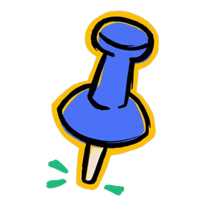
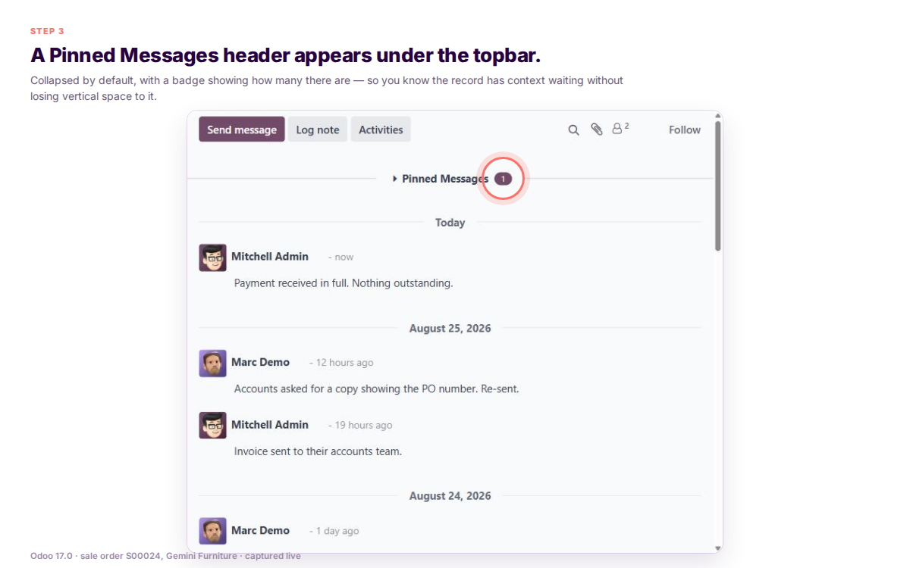
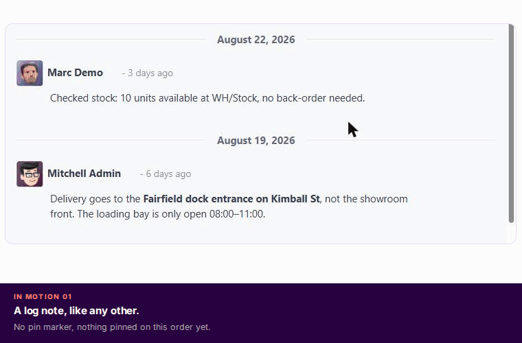
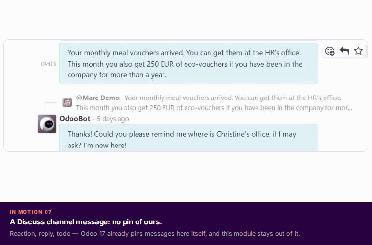
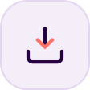
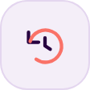
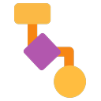

Pin Message in ChatterOdoo 17 · Discuss · Works on every model
The note that matters, pinned to the top of the chatter.
The line that decides everything — a delivery instruction, an agreed exception, a customer on hold — sits sixty messages up. Pin Message in Chatter moves it to a Pinned Messages panel at the top of the chatter, with a count badge, on any Odoo record.

See it work
Six screens, start to finish
Open a step below. This is the whole product — there is no configuration screen, no new menu and nothing to set up first.
1 Step 1The note nobody can find

The problem, on a real record. Sixty messages of tracked-field changes, e-mails and notes. Somewhere in there is the one line that explains why this order is different. Everyone who opens this record has to be told again.
2 Step 2One click on the pin

A thumb-tack on the message itself. It sits beside the author's name, so pinning is one click where you are already reading. There is also a Pin entry in the message actions menu if you prefer that route.
3 Step 3A panel with a count badge

A Pinned Messages header appears under the topbar. Collapsed by default, with a badge showing how many there are, so you know the record has context waiting without losing any vertical space to it.
4 Step 4Expand it, jump to it

Expand it and the pinned notes are cards, newest first. Each carries a See button that jumps the chatter to the original message, in place, with its full history and attachments around it.
5 Step 5The same on any record

It is not a Sales feature or a CRM feature. It attaches to the chatter itself, so it is there on contacts, sale orders, purchase orders, invoices, tasks, products, employees — anything in Odoo with a chatter on it.
6 Step 6Unpin when it stops mattering

Unpinning is the same click again. The message leaves the panel and stays exactly where it always was in the chatter. Nothing is deleted, moved or rewritten — a pin is a flag, not an edit.
Features
Everything it does, in one screen
It is a small module and this is deliberately the whole list. Nothing is hidden behind a "premium" tier, because there is only one tier.
One-click pin, one-click unpin
A thumb-tack on the message bubble, filled when pinned and outlined when not. No dialog, no confirmation step.
A Pinned Messages panel at the top
Injected directly under the chatter topbar, above every other message, so it is the first thing anyone opening the record sees.
Collapsed by default, with a count
A badge shows how many notes are pinned. You get the signal without giving up the screen space until you want it.
Updates live, without a refresh
Pinning broadcasts on Odoo's own message bus, so an open screen picks the change up on its own rather than waiting for someone to reload.
Works on every model with a chatter
Contacts, quotations, purchase orders, invoices, tasks, products, employees. Nothing to enable per model.
A See button that jumps to the message
From a pinned card straight to the original in the chatter, with its replies and attachments around it.
Newest pinned note first
The panel is ordered by date descending, so the most recent decision is the one at the top of the list.
Follows you between records
Move from one record to another and the panel reloads for the new one instead of showing the previous record's pins.
No duplicate button next to Odoo's own
Discuss channel messages keep Odoo's native pin. This module's action appears only on chatter notes, so you never see two pins.
Notes only, not system noise
The pin is offered on log notes, not on tracked-field changelogs, e-mail notifications or automatic system messages.
Pinned cards are visually distinct
A soft tinted card background so the panel reads as pinned content rather than as more of the same conversation.
Nothing leaves your database
A boolean field and a bus notification. No external service, no activation key, no telemetry, nothing to renew.
In motion
Eight clips: pinned notes in a live Odoo chatter
A screenshot proves the panel exists. These prove it behaves — an instant toggle with no save step, one user pinning and another's window updating on Odoo's own bus, and identical behaviour on every record with a chatter.

Pin, unpin, pin again
The button is a toggle and the panel follows it immediately. No save step, no reload, no intermediate state to wonder about.

Pinned, and on screen at once — no save, no reload
The panel and its count appear the instant the pin is clicked. The change goes out on Odoo's own bus rather than being polled for, so a colleague already on the record sees it too.
The badge, then the detail
Collapsed it costs one line of height and tells you there are three things to know. Open it when you want them.

From the card to the conversation
See takes you to the message where it actually lives, so you get the thread around it instead of a decontextualised excerpt.

Contact, order, task — same behaviour
It is attached to the chatter component, not to a business app, which is why it turns up everywhere without being configured anywhere.

No leftovers from the last record
Switching records reloads the panel for the record you are now on. Obvious when it works, maddening when it does not.

One pin button, never two
Odoo 17 already pins messages inside Discuss channels. That is left alone; this module fills the gap on record chatters, and the two never appear together.

Only where pinning makes sense
No pin on "Stage: New → Qualified" or on an outgoing e-mail receipt. Pinning system noise would just make a second stream of noise.
3
automated tests, 0 failures
3
standard Odoo dependencies
1
field added to your database
0
external services contacted
The module is small, your time isn't
Ask us anything before you install it
Whether it works on your custom model, whether pinning can be restricted, whether it survives your next upgrade, whether it clashes with another chatter module you already run — ask, and we will answer without pretending the answer is always yes.
Book a demo
We show it on a live Odoo 17, on your kind of record.
Scan a code with your phone camera to open the link. The address printed beside each code is the same destination typed out, so it still works if this page is copied as plain text.
Requirements
Runs on a standard Odoo 17. Nothing else to buy.
Never installed an Odoo app before? This is the whole checklist in plain words — what you need, what it touches in your database, and how to undo it. There is no licence key, no external service and no configuration screen anywhere in it.
Which Odoo do I need?
Odoo 17.0, Community or Enterprise. This is the 17.0 build, module version 17.0.1.0. Nothing else on the server changes.
Do I need other apps first?
No. It uses only standard Odoo: web, base and mail — all already in your database. Nothing extra to buy or subscribe to.

How do I install it?
Three steps: copy the folder into your addons path, update the apps list, click Install. No installer, no shell script, no settings screen afterwards.
Is there a licence key?
None. The module never contacts a licence server and never phones home, so there is nothing to activate, renew or lose. It keeps working if you never hear from us again.
What does it add to my database?
One indexed true/false field, is_pinned, on mail.message. Your messages are never rewritten, moved or copied anywhere.

Can I undo it?
Yes, in one click. Uninstalling removes the field, the panel and the buttons, and the chatter goes back to exactly what it was. Nothing is left behind.
The rest of the detail
| Item | Detail |
|---|---|
| Licence | LGPL-3, with the full readable source. You may read it, audit it and change it for your own use. |
| Where it appears | The chatter on any model — contacts, sale orders, invoices, tasks, products, your own custom models. Discuss channel messages keep Odoo's own native pin instead, so you never see two pin buttons. |
| Which messages | Log notes and ordinary comments. The pin is not offered on system notifications, e-mail notifications or tracked-field entries such as "Stage: New → Qualified". |
| Who can pin | Any user who can write to messages, on any record they can already see. There is no group, setting or author check today, so treat a pin as a shared bookmark. Need it restricted to managers? Ask us before you buy and we will quote it. |
| Languages | The labels are English only. No translation files ship today; Odoo's own translation tools let you add your language, or ask us and we will add it. |
| External services | None. No data leaves your database, so there is nothing to disclose to your IT team and nothing to opt into. |
| Demo data | None, and none needed. Open any record with a chatter, pin a note, and you have seen the whole product. |
FAQ
Twelve real questions, answered plainly
Open any question. These are what buyers ask us before paying: which records work, who can pin, what happens if you uninstall, and where Odoo's own Discuss pin still applies.
Which records can I pin messages on?
Any record with a chatter. The module patches the chatter component itself rather than a particular app, so contacts, quotations, sale orders, purchase orders, invoices, project tasks, products, employees and your own custom models all work with nothing to configure.
Does this replace or break Odoo's own message
pinning?
Neither. Odoo 17 pins messages inside Discuss channels, and that is untouched. This module adds the equivalent for record chatters, and its button is deliberately hidden on discussion messages so you never see two pins next to each other.
Can I pin any message, or only notes?
Log notes and ordinary comments. The pin is not offered on system notifications, e-mail notifications, automatic comments or tracked-field changelog entries such as "Stage: New → Qualified" — pinning those would create a second stream of noise rather than reduce the first.
Who can pin and unpin?
Any user who can write to messages, which in practice means most internal users, on any record they are allowed to see. There is no group, no setting and no restriction to the message's author today — a pin behaves as a shared bookmark, which for most teams is the point. If you need pinning restricted to managers, tell us before you buy and we will quote it rather than have you find the gap afterwards.
Does pinning change or move the message?
No. A pin sets one boolean on the existing message. The message stays where it was in the chatter, with its original author, date, body and attachments. Unpinning clears the flag and nothing else.
Will my colleague see it without refreshing?
Yes. Pinning sends a notification on Odoo's own message bus, so a screen already open on that record updates by itself. No polling, no reload prompt.
How many messages can I pin on one record?
There is no limit in the module. The panel lists every pinned message on the record, newest first, and shows the count on its collapsed header. Practically speaking three or four is where a pinned panel stops being useful, but nothing stops you.
Is it translated into my language?
Not yet — the labels are English only, and we would rather say so here than have you find out after paying. Odoo's own translation tools let you translate it in your own database, and if you ask us for a language we will add it to the module.
Is it Community or Enterprise?
Both. It depends only on web, base and mail, which ship in Community, and it works the same on Enterprise.
Does anything leave my server?
Nothing. There is no outbound network call of any kind — no telemetry, no licence check, no cloud component. That is also why there is no activation key and nothing for us to switch off.
What happens if I uninstall it?
The is_pinned field, the panel and the buttons are removed and the chatter returns to standard Odoo. Because pinning never edited a message, every message survives exactly as it was — you only lose the record of which ones were pinned.
What exactly do I get?
The module, its full LGPL-3 source, and a defect fix if you find a bug in it. Support and pre-sales go to the same inbox and a person who knows this code answers. Work beyond the module — restricting who may pin, adding a language, migrating to a newer Odoo — is quoted separately, and only if you ask.
Works great with
Other Doodex modules, built the same way
Different problems, same approach: narrow scope, a one-time price and the limits stated up front. Each one installs on its own.
Doodex Growth Suite
Five CRM and marketing modules that share one another's data: BizScan AI, Campaign Manager, Smart Dashboards, User Roles and Email Sync+. Sold as one suite.
Flow Survey Reader
Publish conditional surveys and forms straight from Odoo and keep every answer in your own database.

$199 onceFlow Survey Builder
The drag-and-drop editor for those surveys: 25 question types, slide branching and full theming.
On the Odoo Apps Store, search Doodex Growth Suite, Flow Survey Reader or Flow Survey Builder — all published by Doodex.
Releases
What has shipped, and what is next
A visible changelog is the honest answer to "will this still be maintained next year". Ours starts here.
First release for Odoo 17.0. is_pinned on mail.message with a toggle broadcast on the Odoo bus for live updates. Thumb-tack button on the message bubble plus a Pin entry in the message actions menu, both restricted to chatter notes so Odoo's native Discuss pin is never duplicated. Collapsible Pinned Messages panel above the chatter with a count badge, cards ordered newest first, a See button that jumps to the original, tinted card styling, and a reload when you move to another record. 3 automated tests, 0 failures.
The two gaps named above: an optional permission group controlling who may pin and unpin, and translation files so the panel is not English-only. Also under review: showing who pinned a message and when, and a way to see all pinned messages across records in one list. Tell us which matters most to you and it moves up.
Install it and it is on every record
Stop retyping the note everyone needs
Get it from this page and pin your first note this afternoon. Or spend half an hour with us first and be certain it does what you think it does.
Scan a code with your phone camera to open the link. The address printed beside each code is the same destination typed out.